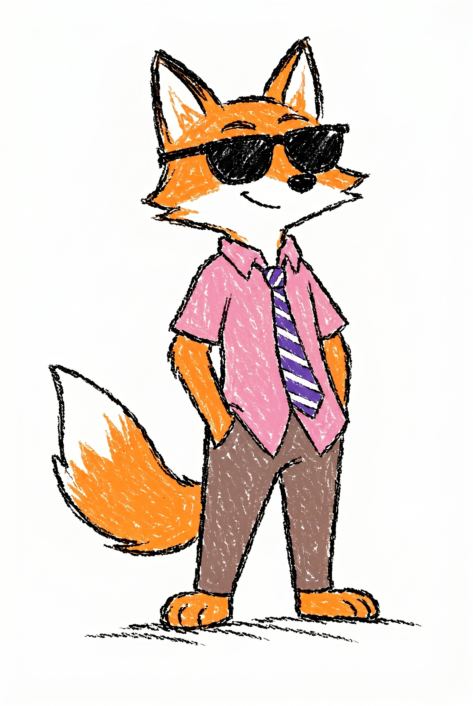
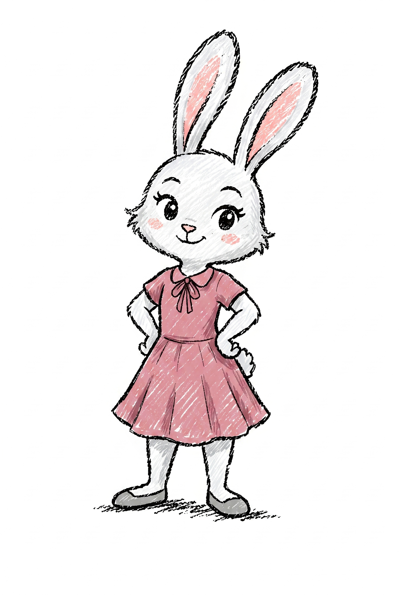

.char--night::after {
content: '';
position: absolute;
inset: 0;
pointer-events: none;
/* amber from right (city), blue from left (moon) */
background: linear-gradient(
100deg,
rgba(40, 60, 160, 0.50) 0%, /* cool blue — moon */
transparent 48%,
rgba(200, 120, 20, 0.55) 100% /* warm amber — city */
);
mix-blend-mode: multiply;
}
/* flip gradient direction for Judy (city is on her left) */
.char--judy.char--night::after {
background: linear-gradient(
100deg,
rgba(200, 120, 20, 0.55) 0%, /* warm amber */
transparent 52%,
rgba(40, 60, 160, 0.50) 100% /* cool blue */
);
}
mix-blend-mode: multiply — easy to tune, works identically on every pose,
and costs zero extra image assets.